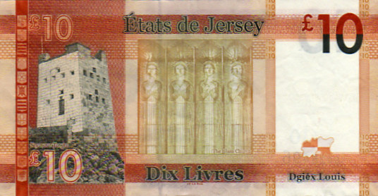

Bétôt j'éthons du Jèrriais dans touos les conmèrces et les gens d'Jèrri lus en vont trouver des pouch'tées et des boursées d'Jèrriais. Auve du Jèrriais sus les nouvelles billes dé Jèrri, i' n'y'étha pon d'doute qué ch'n'est pon des louis d'Angliétèrre ni d's ûros nitout.
Lé nom d'not' cours, ch'est un louis, et nou l'vèrra împrînmé sus les nouvelles billes auve l'Angliais et l'Français. Lé nom du cours en Angliais et Français rapporte à la livre d'argent tchi soulait êt' l'assiette du système Romain. La vielle lire Italienne tchi fut rempliaichie par l'ûro avait la même originne, et l'sŷmbole du louis (£) ch'est étout un L pouor l'mot Latîn "librum".
Not' louis a s'n originne historique étout. Ch'est en tchi j'faîthêmes sèrvi la livre tournouais jusqu'en 1834. L'Rouai Louis XIII dé France lanchit l'louis d'or en 1641. En France la livre avait 'té rempliaichie par l'franc en 1795, mais les pièches continnuaient à cirtchuler en Jèrri et ch'n'est pon ravissant qu'nou pâlait tréjous du louis. Et quand les pièches Jèrriaises en tchuivre fûtent întroduites en 1841, rein n'fut changi.
Pouor les sŷmboles, les pièches Jèrriaises avaient coumme dé raîson les trais cats. Mais y'avait tout pliein d'banques à împrînmer des billes, et les Pâraisses étout. Ch'est întérêssant d'vaie, sus des vielles billes d'la Vîngtaine d'la Ville, un portrait d'la pouquelaye dêcouvèrte sus l'Mont d'la Ville, la cheinne présentée au Gouvèrneux, l'Marécha Conway.
Hardi d'pays présentent des portraits d'lus grandes gens sus lus billes. En Êcosse y'a, par exempl'ye, Messire Walter Scott, Robert Burns et Lord Kelvin. En Angliétèrre, y'a Charles Darwin et d'aut's. En Irlande du Nord, y'a parmi d'aut's, Harry Ferguson (lé chein des tracteurs) et J.B. Dunlop (lé chein des tyeurs).
Pouor dé nous, j'éthêmes peu r'présenter tchiqu's'eune dé nos célébrités historiques. Eune bille auve un portrait d'Lillie Langtry pathaîssait bein belle. Mais v'là tch'est mus, j'avons nos bieautés dans l'paysage, nos monuments et bâtisses.
Et jé n'sommes pon oblyigis d'înventer des ponts et des portes înmaginnaithes coumme sus les billes d'ûros nitout!
Geraint Jennings
Viyiz étout: